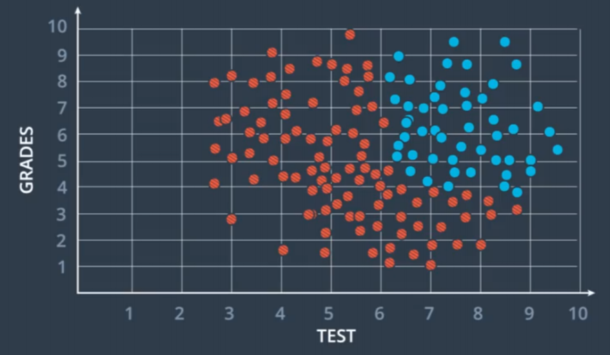
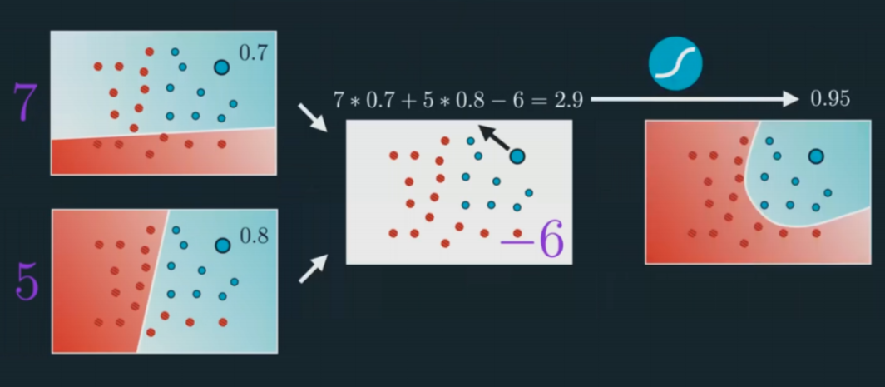
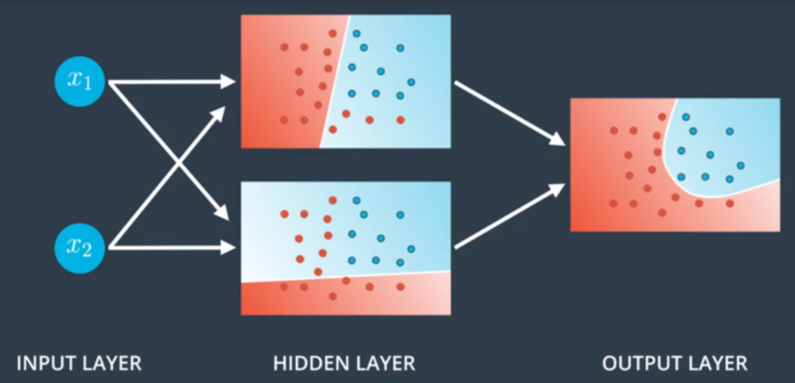
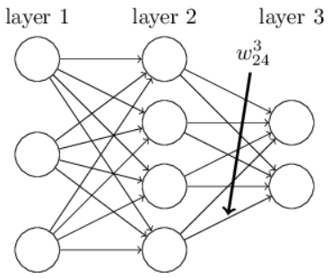

Chapter 7 – Real (Non-linear) Neural Network¶
So in the previous example, we derived the gradients for a two layers neural network. This is to find the straight line that bisects the two groups in figure 1.1 in the introduction. However, in reality, we often have the following groups:
For data like this, a linear separator cannot satisfy our needs. The solution is to add another linear separator on top of the original linear separator.
This is a classic three layers neural network. The layer at the left hand side is called the input layer; the layer at the right hand side is known as the output layer; the layer in between is called the hidden layer. The hidden layer is like a black-box that we cannot usually interpret by our instinct. We will dig in more details later.
This is becoming something like a network finally. But the way we express the weights get more complicated. Here is how we define it by tradition:
\begin{equation} w_{ab}^{(n)} \end{equation}
where \(n\) means the \(n^{th}\) layer in the neural net; \(n\) = \(1\) at the input layer. Suppose \(n=1\) at the input layer, then \(a\) and \(b\) means that the weight is pointing from the \(a^{th}\) neural in the second (hidden) layer to the \(b^{th}\) neural in the input layer. This is going backwards (to the left).
For example, the weights in the input layer in the figure 1.11 can be defined as follow
\begin{equation} W^{(1)}= \begin{bmatrix} w^{(1)}{11} & w^{(1)}{21} \ w^{(1)}{12} & w^{(1)}{22} \ w^{(1)}{13} & w^{(1)}{23} \end{bmatrix} = \begin{bmatrix} 5 & 7 \ -2 & -3 \ -8 & 1 \end{bmatrix} \end{equation}
And the weights in the hidden layer can be defined as
\begin{equation} W^{(2)}= \begin{bmatrix} w^{(2)}{11} \ w^{(2)}{12} \ w^{(2)}_{13} \end{bmatrix} = \begin{bmatrix} 7 \ 5 \ -6 \end{bmatrix} \end{equation}
In python, we can describe the core features of such network by defining a Network clas. Here’s the code we use to initialize a Network object:
import numpy as np
class Network(object):
def __init__(self, sizes):
self.num_layers = len(sizes)
self.sizes = sizes
self.biases = [np.random.randn(y, 1) for y in sizes[1:]]
self.weights = [np.random.randn(y, x)
for x, y in zip(sizes[:-1], sizes[1:])]
In this code, the list sizes contains the number of neurons in the respective layers. So, for example, if we want to create a Network object with 2 neurons in the first layer, 3 neurons in the second layer, and 1 neuron in the final layer, we’d do this with the code:
net = Network([2, 3, 1])
The biases and weights in the Network object are all initialized randomly, using the Numpy np.random.randn function to generate Gaussian distributions with mean 0 and standard deviation 1. This random initialization gives our stochastic gradient descent algorithm a place to start from. In later chapters we’ll find better ways of initializing the weights and biases, but this will do for now. Note that the Network initialization code assumes that the first layer of neurons is an input layer, and omits to set any biases for those neurons, since biases are only ever used in computing the outputs from later layers.
Note also that the biases and weights are stored as lists of Numpy matrices. So, for example net.weights[1] is a Numpy matrix storing the weights connecting the second and third layers of neurons. (It’s not the first and second layers, since Python’s list indexing starts at 0.) Since net.weights[1] is rather verbose, let’s just denote that matrix \(w\). It’s a matrix such that \(w_{jk}\) is the weight for the connection between the \(k_{th}\) neuron in the second layer, and the \(j_{th}\) neuron in the third layer. This ordering of the j and k indices may seem strange - surely it’d make more sense to swap the j and k indices around? The big advantage of using this ordering is that it means that the vector of activations of the third layer of neurons is:
\begin{equation} a^{‘}=\sigma(wa+b) \end{equation}
There’s quite a bit going on in this equation, so let’s unpack it piece by piece. \(a\) is the vector of activations of the second layer of neurons. To obtain \(a^{'}\) we multiply a by the weight matrix \(w\), and add the vector b of biases. We then apply the function \(\sigma\) elementwise to every entry in the vector wa+b. (This is called vectorizing the function \(\sigma\).)